Using threads incorrectly can create many different kinds of problems. Too many active threads can result in thread starvation, threads can block each other and impact the liveness of your application or acquiring locks in the wrong order can lead to deadlocks. In addition, information about threads is important for debugging purposes.
In JProfiler, thread profiling is split into two view sections, the "Threads" section deals with the life-cycle of threads and with capturing thread dumps. The "Monitors & locks" section offers functionality for analyzing the interaction of multiple threads.
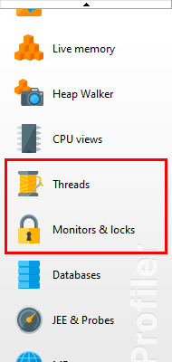
The thread history view shows each thread as a colored row in a time-line where the color indicates the recorded thread status. Threads are sorted by their creation time and can be filtered by name. When monitor events have been recorded, you can hover over parts of a thread where it was in the "Waiting" or "Blocked" state and see the associated stack trace with a link into the monitor history view.
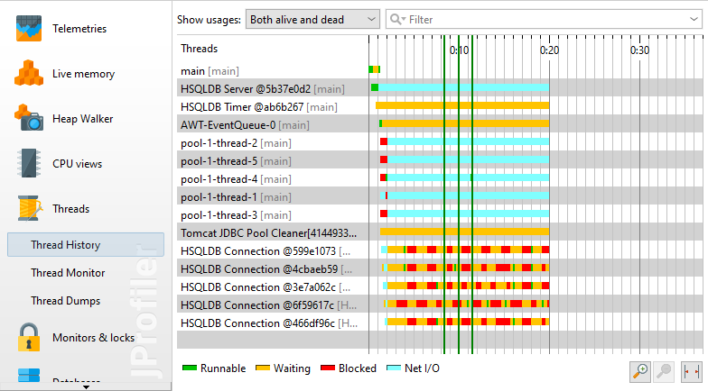
A tabular view of all threads is available in the thread monitor view. If CPU recording is active while a thread is being created, JProfiler saves the name of the creating thread and displays it in the table. At the bottom, the stack trace of the creating thread is shown. For performance reasons, no actual stack trace is requested from the JVM, but the current information from CPU recording is used. This means that the stack traces will only show those classes that satisfy the filter settings for call tree collection.
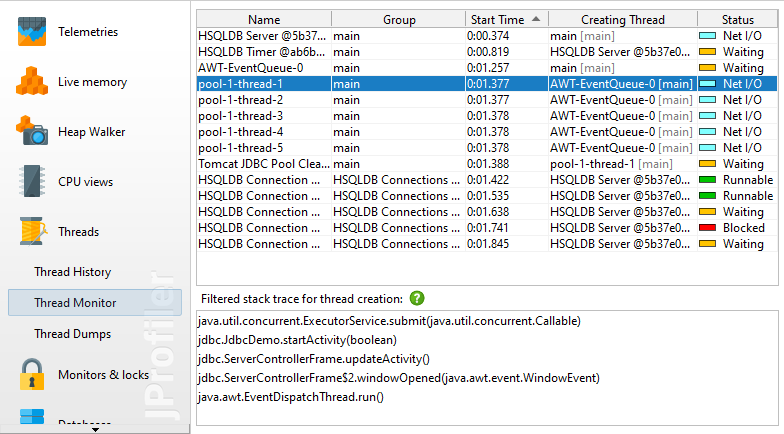
If you enable the recording of estimated CPU times in the profiling settings, a CPU Time column is added to the table. CPU time is only measured when you record CPU data.
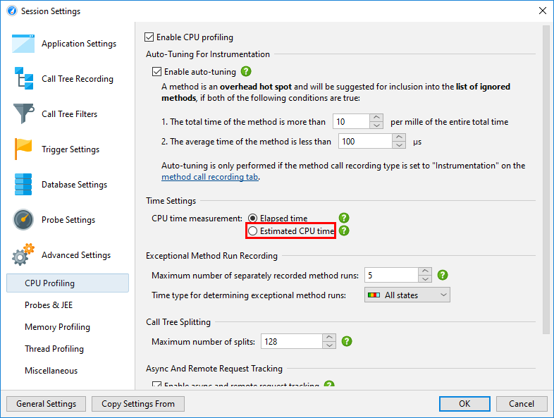
Like most debuggers, JProfiler can also take thread dumps. The stack traces of thread dumps are the full stack traces provided by the JVM and do not depend on CPU recording. Different thread dumps can be compared in a diff viewer when you select two thread dumps and click the Show Difference button. It is also possible to compare two threads from a single thread dump by selecting them and choosing Show Difference from the context menu.
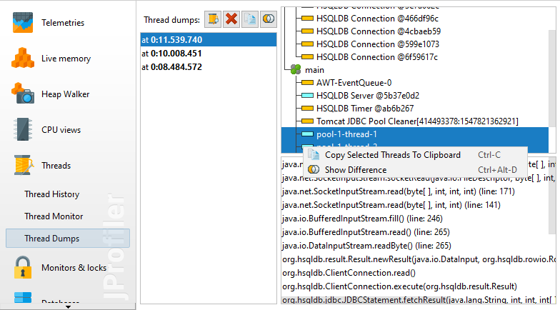
Thread dumps can also be taken with the "Trigger thread dump" trigger action or via the API.
Every Java object has an associated monitor that can by used for two synchronization operations: A thread
can wait on a monitor until another thread issues a notification on it, or it can acquire a lock on a monitor,
possibly blocking until another thread has given up the ownership of the lock. In addition, Java offers classes in
the java.util.concurrent.locks package for implementing more advanced locking strategies. Locks
in that package do not use monitors of objects but a different native implementation.
JProfiler can record locking situations for both of the above mechanisms. In a locking situation, there are one
or multiple threads, a monitor or an instance of java.util.concurrent.locks.Lock as well as a
waiting or blocking operation that takes a certain amount of time. These locking situations are presented in
a tabular fashion in the monitor history view, and visually in the locking history graph.
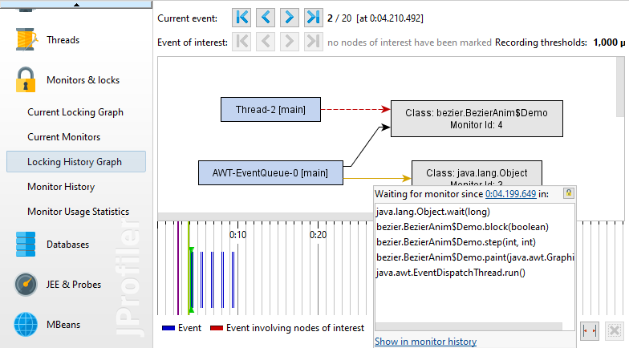
The locking history graph focuses on the entire set of relationships of all involved monitors and threads rather than the duration of isolated monitor events. Threads and monitors participating in a locking situation are painted as blue and gray rectangles, if they are part of a deadlock, they are painted in red. Black arrows indicate ownership of a monitor, yellow arrows extend from waiting threads to the associated monitors, while a dashed red arrow indicates that a thread wants to acquire a monitor and is currently blocking. Stack traces are available when hovering over blocking or waiting arrows if CPU data has been recorded. Those tool tips contain hyperlinks that take you to the corresponding row in the monitor history view.
The tabular monitor history view shows monitor events. They have a duration that is displayed as a column so you can find the most important events by sorting the table. For any selected row in the tabular view, you can jump to the graph with the Show in Graph action.
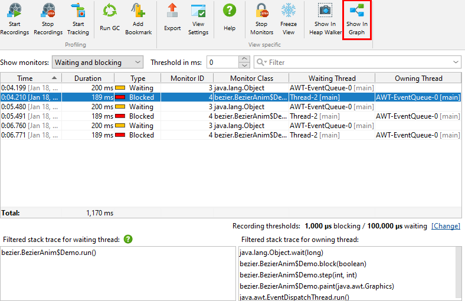
Each monitor event has an associated monitor. The Monitor Class column shows the class name of the instance whose monitor is used, or "[raw monitor]" if no Java object is associated with the monitor. In any case, monitors have a unique ID that is displayed in a separate column, so you can correlate the usage of the same monitor over multiple events. Each monitor event has a waiting thread that is performing the operation and optionally an owning thread that is blocking the operation. If available, their stack traces are shown in the lower part of the view.
If you have further questions about a monitor instance, the Show in Heap Walker action in both monitor history view and locking history graph provides a link into the heap walker and selects the monitor instance as a new object set.
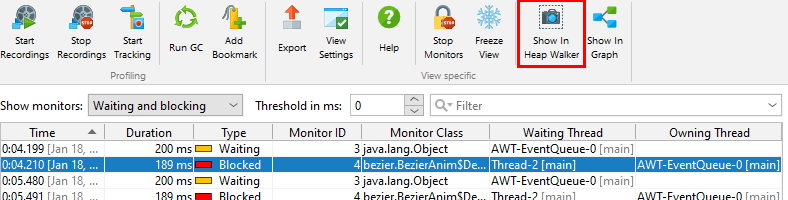
One fundamental problem with analyzing monitor events is that applications may generate monitor events at an extraordinary rate. That is why JProfiler has default thresholds for waiting and blocking events below which events are immediately discarded. These thresholds are defined in the view settings and can be increased in order to focus on longer events.
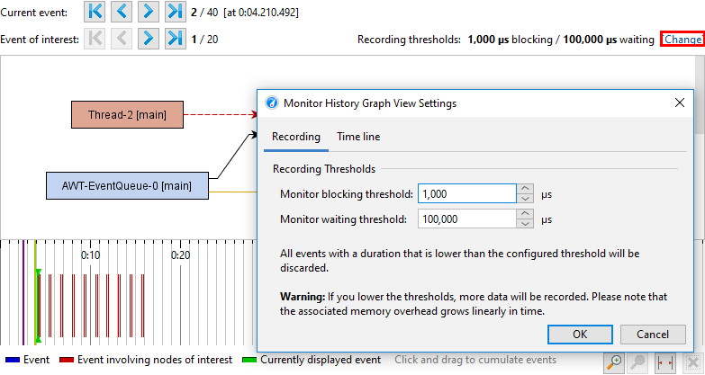
To the recorded events, you can further apply filters. The monitor history view offers a threshold, an event type and a text filter at the top of the view. The locking history graph allows you to select a thread or a monitor of interest and only show locking situations that involve the marked entities. Events of interest are shown with a different color in the time line and there is a secondary navigation bar to step through those events. If the current event is not an event of interest, you can see how many events are between the current event and the next event of interest in either direction.
In addition to locking situations where the selected thread or monitor are present, the locking situations where it is removed from the graph are shown as well. This is because each monitor event is defined by two such locking situations, one where an operation is started and one where it has ended. This also means that a completely empty graph is a valid locking situation that indicates that there are no more locks in the JVM.
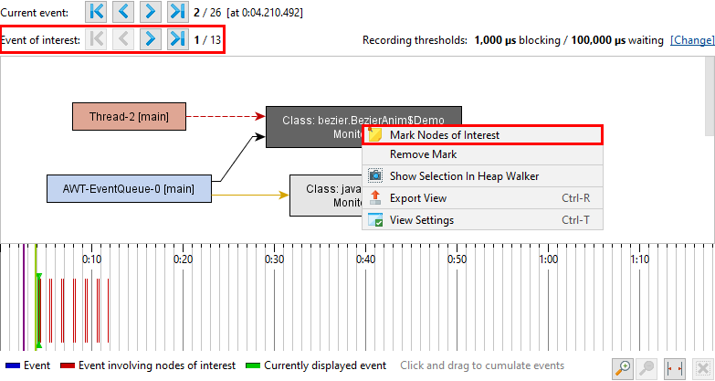
Another strategy to reduce the number of events that need your attention is to cumulate locking situations. In the locking history graph, there is a time line at the bottom that shows all recorded events. Clicking and dragging in it selects a time range and data from all contained events is shown in the locking graph above. In a cumulated graph, each arrow can contain multiple events of the same type. In that case, the tool tip window shows the number of events as well as the total time of all contained events. A drop-down list in the tool tip window shows the time stamps and lets you switch between the different events.
Data in the current locking graph and current monitors views is always shown, regardless of whether monitor events are recorded. These views show the current locking situations and the monitor events that are in progress. Blocking operations are usually short-lived, but in the event of a deadlock, both views will display a permanent view of the issue. In addition, the current locking graph shows the threads and monitors that produce a deadlock in red, so you can spot such a problem immediately.
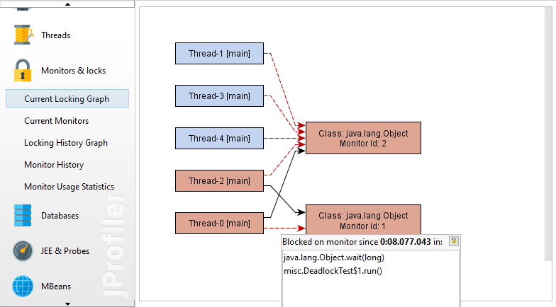
To investigate blocking and waiting operations from a more elevated perspective, the monitor statistics view calculates reports from the monitor recording data. You can group monitor events by monitors, thread names, or classes of monitors and analyze cumulated counts and durations for each row.
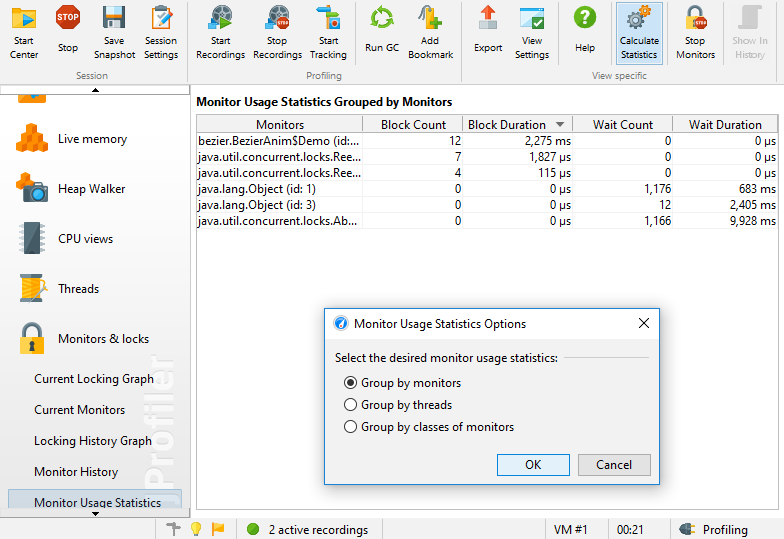